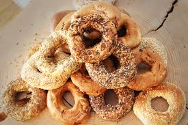

O bagel estilo Montreal ou bagel de Montreal é uma variedade distinta de bagel feito à mão
e assado no forno a lenha. Ao contrário do bagel nova-iorquino, o bagel de Montreal é menor,
mais fino, mais doce e mais denso, com furo maior, e é sempre assado em forno a lenha.